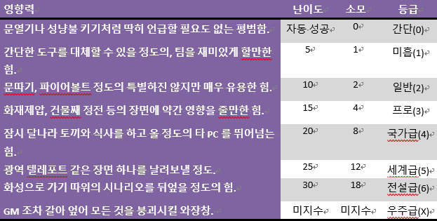

이능력
아이디어 참고: Jason Puckett와 John Ross, Risusverse마법이나 초능력 등 이능이 중요시 사용되는 시나리오일 경우 이 룰을 사용합니다. 이능 캐릭터는 다른 캐릭터들과는 조금 다른 특별한 캐릭터입니다. 이들은 다른 이들이 사용할 수 없는 특별한 힘을 사용해요. 마법사 캐릭터를 재미있게 만드는 방법은 그저 ‘전쟁 마법사(5)’라는 너무 범용적이고 포괄적인 클리셰보다는 ‘미치광이 화염술사(5)’ 같이 뚜렷한 클리셰를 주는 것이 좋습니다. 사실 다른 캐릭터들도 더 뚜렷한 클리셰를 주는 것이 좋지만요.
특별한 힘에 대해 다룰 때는 클리셰와 어울리는 힘을 사용하면서, 또한 캐릭터가 사용하려는 힘의 정도에 따라 난이도를 정함으로 구별을 할 수가 있습니다. 예를 들자면 ‘미치광이 화염술사(5)’가 비구름을 불러서 화재를 제압된다고 하는 것은 이치에 맞지 않지만 그가 적진의 본부를 통째로 폭발시켜 버리겠다는 것은 자연스럽습니다. 힘의 척도에 대한 난이도는 아래 표를 참고해주세요.
이능 상세화
이능의 규칙을 좀 더 상세하게 하고 싶을 경우 아래의 규칙들을 적용한다.점수 소모식
MP나 HP, DP 혹은 흡혈귀 규칙의 혈액 특정 클리셰의 점수를 소모하는 것으로 이능을 사용한다는 식으로 이능 가용 가능 횟수를 제안할 수가 있다.이능 클리셰 차별화
밸런스 조절을 위해 이능을 판정하는 클리셰와, 사용 가능한 이능 수준의 척도를 나타내는 이능 클리셰를 따로 차별화 시킨다. 이능은 미흡(1)에서 전설급(6)까지 척도가 있으며 간단(0)은 이능 클리셰가 있으면 자동으로 사용 가능. 예시로 마법사(3)과 마법(2)를 가지면 마법 판정시 마법사(3)으로 하되 일반(2) 수준의 마법까지만 사용이 가능하다.이능의 판정과 난이도
이능을 사용하는 클리셰에 따라서 난이도의 높낮이를 변경한다. 예를 들자면 일반 마법사(3)의 경우 위 이능 테이블처럼 프로 마법을 사용하기 위해선 난이도 15에 판정해야 하지만 전설의 마법사(3)의 경우엔 난이도 10에 판정할 수도 있게 된다.혹은 점수 소모식과 병행할 경우 이능 판정은 자동 성공으로 하되 수준에 따라서 소모되는 점수의 양을 변경시키는 식도 가능하다. 이능 테이블 참조. 테이블은 예시일 뿐 소모 되는 점수의 양을 바꿀 수가 있다. 혹은 등급과 영향력의 척도도 조금 더 시나리오에 맞게 변경시키거나 제한을 걸 수가 있다.